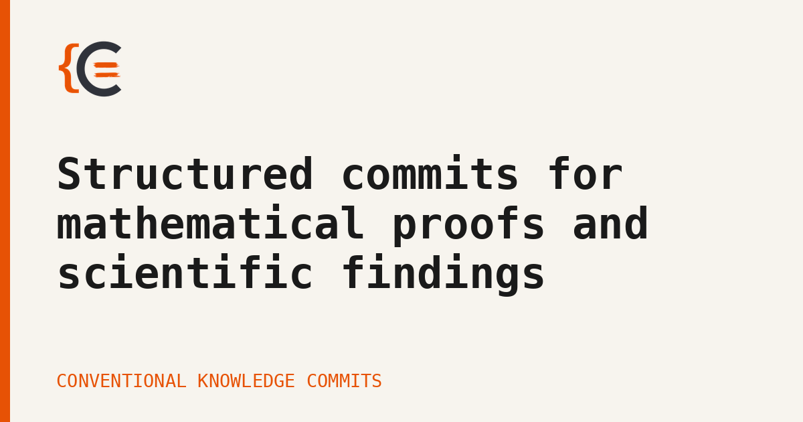

In the piece just before this one, I
described the harness I use to get a proof from an idea to something Lean’s kernel accepts, and the
commit discipline, Conventional Knowledge
Commits, that keeps an honest record of what is proved
and what is only assumed. Both worked exactly as advertised on the next project I ran them against, a
formalisation of Geshkovski, Rigollet and Ruiz-Balet’s paper on the mean-field dynamics of
Transformers as measure-to-measure maps (arXiv:2411.04551). Zero
sorry. Every axiom named, individually consistent, cited. And eleven of the twelve turned out to be
false as stated.
Not false in the sense of contradicting each other, which is the failure the pipeline already checked for. False in the sense of claiming more than the paper does: a hypothesis dropped somewhere between the source and the Lean statement, invisible to every check I had, because a dropped hypothesis does not make an axiom inconsistent. It makes it stronger, and a stronger axiom is exactly as easy to satisfy and exactly as easy to cite as the one you meant to write.
Two ways for an axiom to be wrong¶
An axiom in this pipeline already goes through one check before it is trusted. proof-review asks
whether it is satisfiable: does a mathematical object exist that has the property the axiom claims?
This catches real mistakes, and the same project had already produced one. An early axiom demanded a
measure split into M pieces, each confined to an open hemisphere of the sphere. Set M = 1, the
smallest case, and the demand forces the entire measure into a half-space: no centrally-symmetric
measure without atoms satisfies that, not a Gaussian, not the uniform law on a ball or a sphere. The
axiom was asking for an object that provably does not exist. Try to build one and the construction
breaks in your hands; the fix was to stop building the hemisphere confinement into the definition of
the pieces and let each one acquire it separately, the way the paper’s own argument does.
That is what satisfiability review is built to find: an axiom that is not just wrong but incoherent, the kind that would let the kernel prove anything if it slipped through, because a false hypothesis implies everything. It is also, precisely for that reason, a narrow check. It asks only whether some mathematical object fits the axiom’s description. It does not ask whether that description matches the paper. Eleven of the twelve axioms in the same project described objects that certainly exist, real Mathlib types, correctly quantified, individually satisfiable, and every one of them claimed a little more than the source had actually shown: a boundedness condition loosened, a non-degeneracy assumption folded away, a regime the argument only holds in generalised past its edge. Satisfiable does not mean faithful. It only means something exists that fits what you wrote down, and it says nothing about whether what you wrote down is what you meant.
Put simply:
- satisfiability review asks does an object exist that fits this axiom, and catches an axiom that is internally incoherent, like the hemisphere one above;
- it cannot catch an axiom that dropped a hypothesis in translation, because the loosened axiom is still perfectly satisfiable, just stronger than what the paper proved;
- that second kind is what eleven of the twelve axioms in this project turned out to have.
One of the eleven¶
Here is one, in full, because the shape of the mistake is easier to see concrete than described. The paper’s Lemma 3.4 (p.16) reads:
Let \(T > 0\) and let \(\mu_0, \nu_0 \in P(Q_1^{d-1})\) be two different measures such that \(\mathbb{E}_{\mu_0}[x] = \gamma_1 \mathbb{E}_{\nu_0}[x]\) for some \(\gamma_1 \in (0, 1]\). 1. If \(\gamma_1 = 1\), then, setting \(V \equiv 0\), there exist \(W, U \in M_{d \times d}(\mathbb{R})\) and \(b \in \mathbb{R}^d\) such that the solutions \(\mu, \nu\) to (1.3)-(3.1) corresponding to \(\mu_0, \nu_0\) and these parameters satisfy \(\mathbb{E}_{\mu(T)}[x] \neq \mathbb{E}_{\nu(T)}[x]\).
The project’s word for the paper’s expectation \(\mathbb{E}_\mu[x]\) is barycenter, the same object, \(\int x \, d\mu\). The Lean axiom as first committed:
1 2 3 | |
Type-correct, and it reads as a faithful transcription if you do not check it against the paper
sentence by sentence: two measures, equal barycenters, some parameter separates them after the flow.
What it dropped is everything the blockquote states before that equality. The stub’s
hbar : barycenter μ = barycenter ν is exactly the paper’s \(\mathbb{E}_{\mu_0}[x] =
\mathbb{E}_{\nu_0}[x]\) (the \(\gamma_1 = 1\) case) and nothing else: none of different, probability,
or on the orthant made it into the axiom’s binders. Take μ = ν. The equal-barycenter hypothesis
holds, trivially. But measureFlow θ T μ and measureFlow θ T ν are then the same object for every
θ, so no θ can make their barycenters differ. The axiom as stated is refutable, and the refutation
compiles.
Restoring the paper’s hypotheses:
1 2 3 4 5 | |
closes exactly the gap the refutation used.
The impact, honestly stated, was smaller than the number eleven makes it sound. #print axioms on the
two headline theorems shows neither ever cited this axiom: nothing proved rested on it, so nothing
proved was ever false. It sat in the codebase, unused, false, and cleanly separated from everything the
kernel had actually checked, because the headline theorems still rest on a separate axiom this lemma
chain was built to someday replace, not on the chain itself yet. That separation is exactly the
failure a per-node #print axioms reading cannot see: it tells you a used axiom’s name, never that
an unused one is wrong. The lesson was in the
review discipline, not in a retracted result. It did not stay an axiom for long, either: this one has
since been fully discharged to a machine-checked theorem, its signature still carrying every hypothesis
the fidelity fix restored.
A protocol for fidelity, not just consistency¶
Catching the second kind of error needs a different question than “does a model exist”, asked against a different object: not the axiom in isolation, but the axiom next to the sentence in the paper it is supposed to formalise. Three checks now run wherever an axiom gets written.
The first is hypothesis parity: read the source statement, page-anchored so the comparison is against the actual sentence and not a memory of it, and check that every hypothesis it carries survives into the Lean statement. Dropping one is the failure mode that started this, and it is also the easiest one to miss by inspection, because the Lean statement still reads as a faithful translation of something true, just not of the theorem the paper proved.
The second is a degenerate-instantiation attack: take the hypotheses the source explicitly excludes
and try to instantiate the axiom there anyway. If the Lean statement lets you plug in the case the
paper ruled out and still derive its conclusion (or, worse, derive False), the parity check has
already failed somewhere, and this is the version of it a person can actually run without re-deriving
the whole argument by hand.
The third is model adequacy, and it is the one I found least obvious: can the formal class the axiom is stated over even express what the source’s proof actually uses, not just what its statement claims? A paper’s own impossibility results are often the tightest evidence here. If the authors prove their own construction cannot be strengthened past some line, and the Lean axiom is stated in a class where it can be strengthened past that line, the axiom has already said too much regardless of what its hypotheses list.
Wired through the pipeline, not left to memory¶
None of this is worth much as a checklist I am supposed to remember. It is wired into the same points where an axiom gets introduced or touched:
proof-reviewruns it as a third standing check beside satisfiability, and re-runs it against the actual Lean text once the axiom is written, not only against the plan for it.lean-formalizetriggers the full protocol the moment a new axiom appears in a proof, in place of the old prompt to just confirm intent with me.mathlib-coverage-checkandpaper-to-blueprintapply the same parity check earlier, at the planning and stub-scaffolding stage, diffing a stub’s signature against the verbatim extract before any proof is attempted against it.- the orchestrator’s gates record the sub-checks in the project ledger and carry the distinction through to the write-up gate: kernel-honest and statement-honest are different claims, and the second does not follow from the first.
- the blueprint renderer asserts hypothesis parity between the paper’s box and mine before it will
grant the axiomatised badge, so the badge itself is now evidence the check ran, not just that
#print axiomsnamed the axiom.
The pattern across all of them is the same one CKC already uses for kernel status: move the check as close as possible to the moment the claim is made, and make it something the tooling verifies rather than something I am trusted to have done.
A durable record, and a regression test for the fix¶
A review that runs once and leaves no trace is exactly the failure mode this whole approach is meant
to close. This finding is in fact what pushed Conventional Knowledge
Commits to a new revision, v0.2.0: an axiomatising
commit now carries two required footers, checked before the kernel is even consulted, so a missing one
cannot hide behind an unavailable build. Source-Ref: anchors the
axiom to the exact locus it was checked against: a theorem, an equation, a page, not a citation
floating loose in the prose. Refutation-Attempt: names the artifact of the degenerate-instantiation
attack that failed to break it. Neither is diff-checked the way kernel status is; both are a required
presence, forcing the anchor and the attempt to exist rather than verifying their content, which is a
real limit and one I would like the tooling to close next.

Two more artifacts live in the project itself, not the commit log. A witness instantiates every hypothesis with concrete data and applies the axiom, so a vacuous or over-strengthened statement, one nobody could actually invoke, breaks the build instead of passing every check by never being used. And because eleven axioms in this project got rewritten to be faithful, the old, over-strong versions are worth guarding against returning: each correction leaves behind the disproof of the retracted statement, kept in the build forever, and a short adapter that tries to re-derive the retracted statement from the current axiom, checked to fail to elaborate, a regression test for a bug that was a sentence, not a stack trace. If a future edit widens the axiom back past where the paper actually goes, either check catches it.
What this adds¶
The boundary I described in the last post, proved, assumed, open, turned out to have a seam I had not
been checking. Kernel-honest and status-honest are both about whether the bookkeeping matches the
kernel; this is about whether the axiom matches the paper, and the kernel has no opinion on that at
all. It cannot: #print axioms tells you a result rests on exactly this cited fact, truthfully,
whether or not the cited fact is the one you meant to cite.
Eleven wrong axioms in one project is not a flattering number, and I would rather publish it than not.
The alternative was a formalisation that was zero-sorry, every axiom named and consistent, and
quietly asserting more than its source paper, which is a more dangerous state than an honest sorry,
because it looks finished. The protocol above is what I now have in its place: not a stronger trust in
the axioms, but a stronger, cheaper way to keep from having to trust them at all.